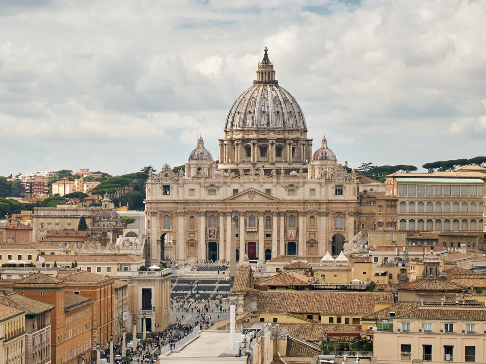
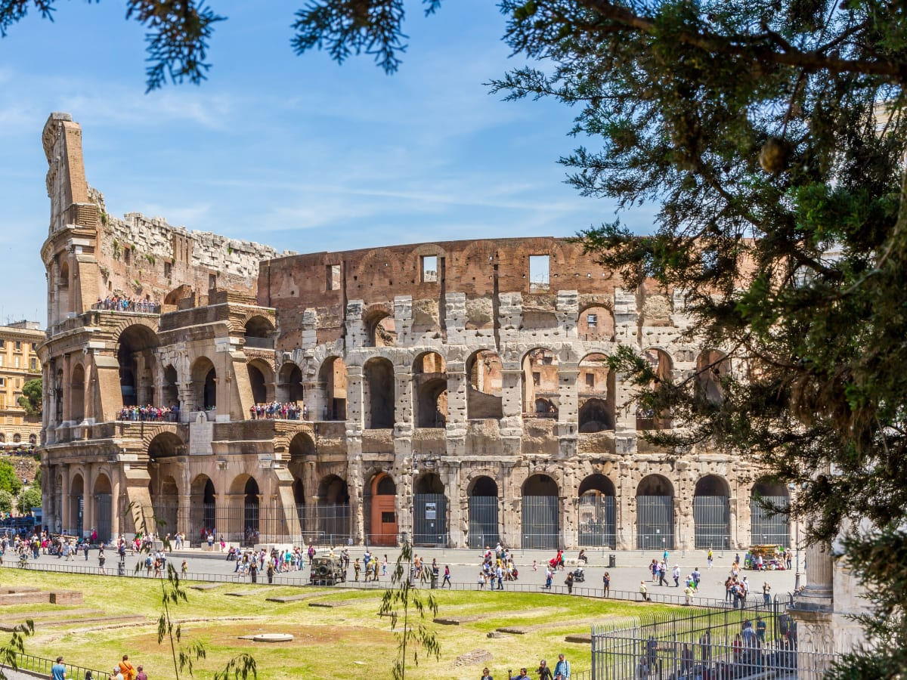
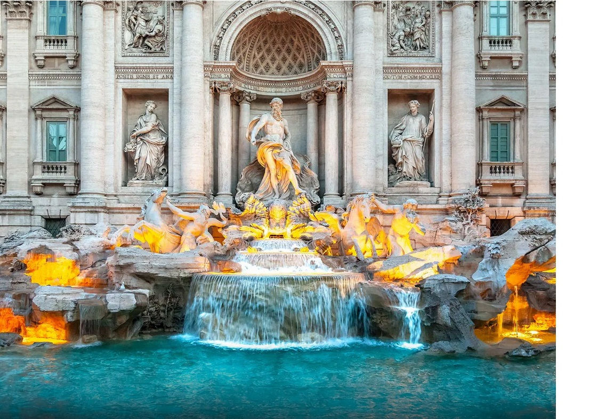
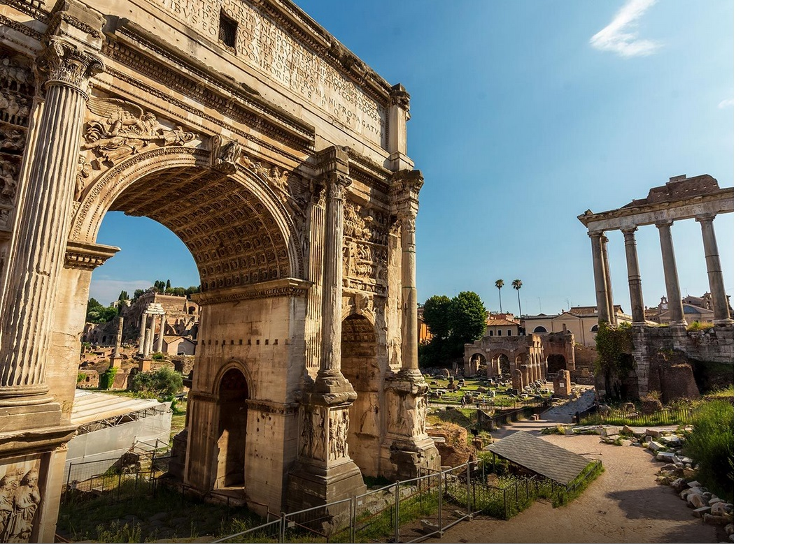
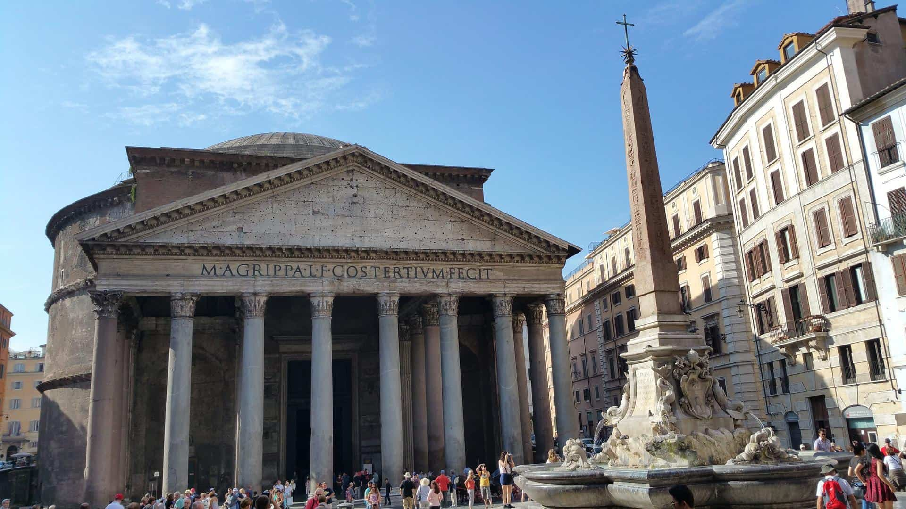
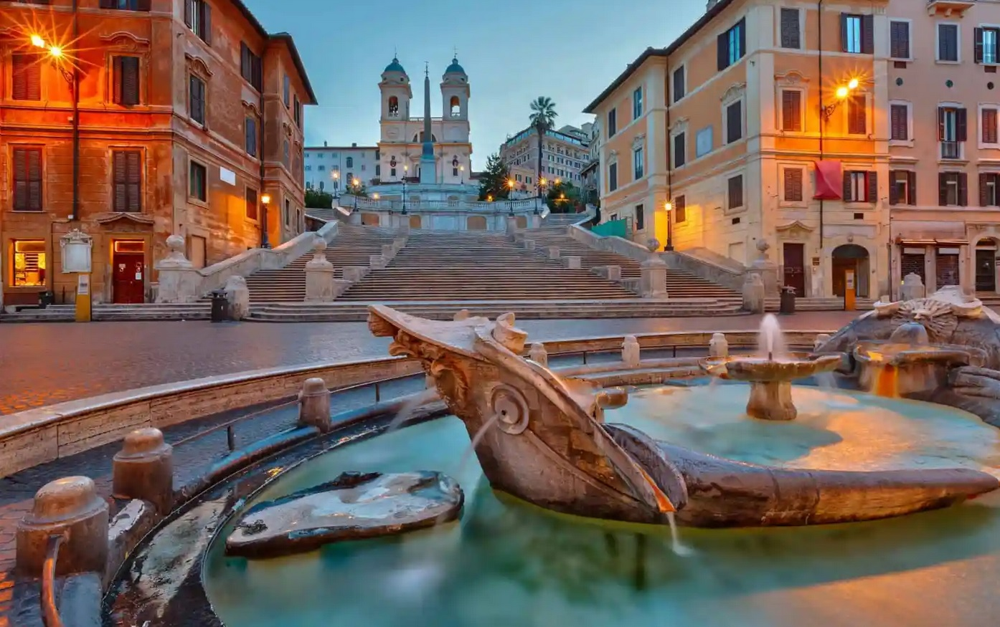
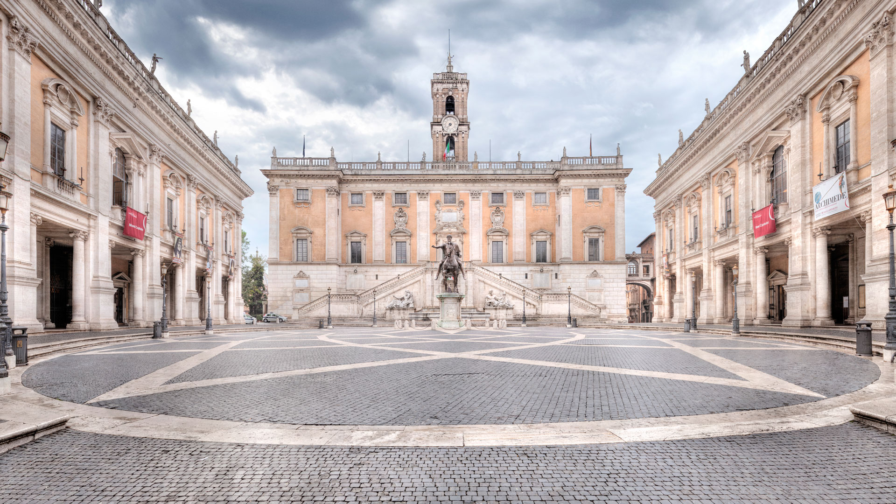

ローマ
ローマは、イタリアの首都であり、欧州有数の世界都市です。また、ラツィオ州の州都でもあります。
ローマは、バチカン市国に囲まれた位置にあり、バチカンは全世界のカトリック教徒にとっての中心地であり、歴史、宗教、文化的にはローマ市と密接な関わりがあります。古代ローマの栄華を象徴する言葉には、「ローマは一日にして成らず」という諺があります。また、領土を持たないマルタ騎士団の本部であるマルタ宮殿も、ローマに位置しており、治外法権が認められています。
2023年現在、ローマの人口は約275万人で、イタリアで最も人口が多い都市です。また、2010年の都市的地域の人口では271万人であり、世界ランキングでは128位に位置します。古代ローマ帝国の首都として、西洋文明圏を代表する都市の一つであり、カトリック教会の中心地でもあります。その美しさからは「永遠の都」と称されることもあります。
おすすめの観光地
①コロッセオ（Colosseum） -
古代ローマの象徴的な建造物であり、世界最大の円形闘技場です。歴史的な見どころとして知られています。
②バチカン市国（Vatican City） -
ローマ教皇の居住地であるバチカン市国は、バチカン美術館、システィーナ礼拝堂、聖ペテロ大聖堂などがあります。
③ローマンフォーラム（Roman Forum） -
古代ローマの政治や商業の中心地であり、壮大な遺跡が残っています。フォロ・ロマーノとも呼ばれます。
④トレヴィの泉（Trevi Fountain） -
ローマで最も有名な噴水の一つであり、美しい彫刻や伝説がある場所です。コインを投げると願いが叶うとされています。
⑤ パンテオン（Pantheon） -
古代ローマの神殿であり、天井の大きな円形の穴（オクルス）から天灯が差し込む特徴的な建築です。
⑥スペイン広場（Piazza di Spagna） -
ローマの中心部にある広場で、スペイン階段やベルニーニの噴水があります。ショッピングや観光の拠点として人気です。
⑦カンピドリオ広場（Campidoglio） -
ミケランジェロ広場とも呼ばれるこの広場は、美しい広場とカピトリーノ美術館があります。